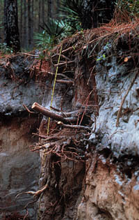
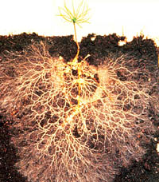

|
|
|
| Among the obstacles ants and other soil dwellers find in the ground are roots. Roots may not seem as interesting as animals or microorganisms, but they help build the soil. They help break up rocks and enhance soil development. They are food for many soil organisms, such as pocket gophers and cicadas, who suck on the juices of roots while they live underground. Roots also provide an excellent environment for the growth of symbiotic and rhizosphere organisms. Legumes such as peas, beans, clover and alfalfa have bacteria living in small nodules on the roots. These bacteria convert nitrogen gas from the soil air into organic compounds the plant can use. Non-legumes also provide a good home for microorganisms in a volume a few millimetres from the root surface. This zone is called the rhizosphere and is rich in exudates from living and sloughed-off root cells. | |
 Roots help anchor plants. Roots stretch, grow, and push their way through the soil to find the water and nutrients plants need to grow. Who can doubt the power of roots when you look at the image of the tap root 1 of this fir tree! We are often completely unaware of the below-ground portion of plants, because we can not see them and they are difficult to excavate. When roots die, they decompose in the soil. This adds nutrients to the soil. In many arable soils, after harvest, up to 40 percent of the above ground plant mass (a tonne or more) is still underground in the form of decaying roots. This adds organic matter to the soil and recycles some of the essential nutrients that were taken up by the harvested crop. | |
 There are a huge number of roots under the soil. Look at the image of this tiny Douglas Fir seedling. This seedling already has a huge root mass that could support the growing plant in nutrient-poor forest soils. The fine feeder roots are only a few hundred micro metres in diameter and the billions of tiny root hairs only have diameters of 10 to 50 micro meters. These tiny roots absorb water and nutrients and form an underground net that helps hold the soil in place. In a single day -if all the tiny roots were placed end to end - a mature tree or grass can produce metres of new root growth. The roots of plants are soil builders and are important in protecting topsoil from erosion. For example, roots of wild rye grass help hold moisture in the soil, and when the grass dies, the roots break down and add nutrients in the soil.
| |
|